ManaLab-Anleitung
Was jeder Bereich der App macht und wie du ihn nutzt. Schwerpunkt auf den Hauptfunktionen und dem KI-Coach.
Was ist ManaLab
ManaLab speichert jede Partie, die du in MTG Arena spielst, auf deinem PC und zeigt dir, was funktioniert: deine Gewinnraten nach Deck, Gegner und Matchup, deine Mulligans, deine Fehler und deine Sideboard-Änderungen.
Die App ist kostenlos. Nur die KI-Analyse verlorener Partien kostet etwas: 5 € pro Monat.
Erste Schritte
- Lade die portable Version (ZIP) herunter, entpacke sie und öffne ManaLab. Keine Installation nötig.
- Gehe in Arena zu Optionen › Konto und aktiviere «Detailed Logs (Plugin Support)». Starte Arena danach neu. Ohne das kann ManaLab deine Partien nicht lesen.
- Beim ersten Start öffnet sich die Startanleitung. Du findest sie unter Einstellungen › Info wieder.
- Drücke im Dashboard auf «Aufzeichnung starten». Ab dann wird jede Partie automatisch gespeichert.
Dashboard: Status der Aufzeichnung
Das Dashboard zeigt, ob ManaLab richtig aufzeichnet. Es hat vier Karten:
- Aufzeichnung: aktiv oder gestoppt.
- Arena-Fenster: ob ManaLab das Arena-Fenster sieht (für Screenshots nötig).
- Kartendatenbank: ob die Kartendaten aktuell sind.
- Aktuelles Match: die Partie, die gerade läuft.
Darunter siehst du deine letzten Matches und die letzte Aktivität.

Partien: dein Verlauf
Hier steht dein gesamter Verlauf. Du kannst nach Gegner, Deck oder Event suchen und nach Alle, Siege oder Niederlagen filtern. Wenn du ein Match öffnest, siehst du diese Reiter:
- Match: die Zusammenfassung des Matches und seiner Partien.
- Partie: Starthand, Startzug, Mulligans und was passiert ist.
- Wiederholung: die Partie Schritt für Schritt, Zug für Zug.
- Gegner: die Karten des Gegners, die du gesehen hast.
- Analyse: die KI-Erklärung (nur für Abonnenten).
- Notizen: deine Fehler und Notizen.
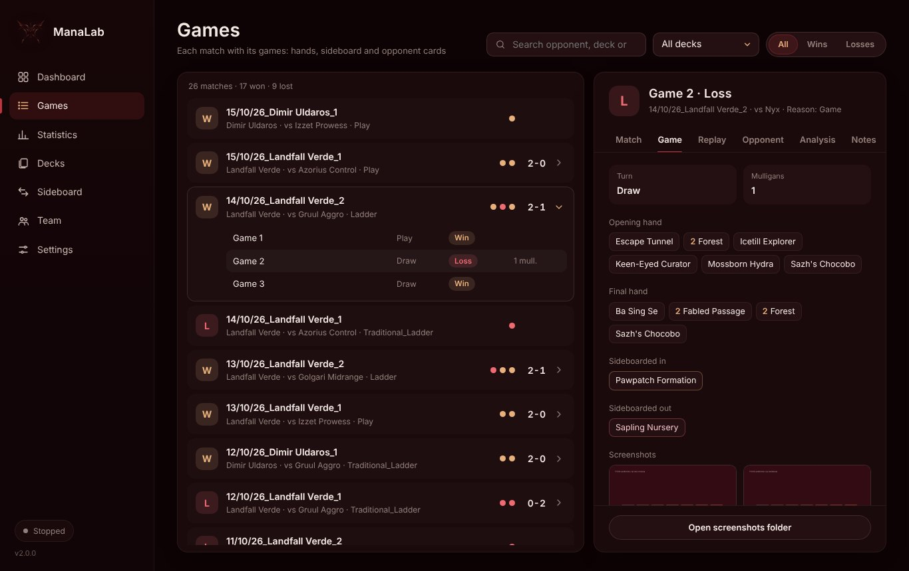
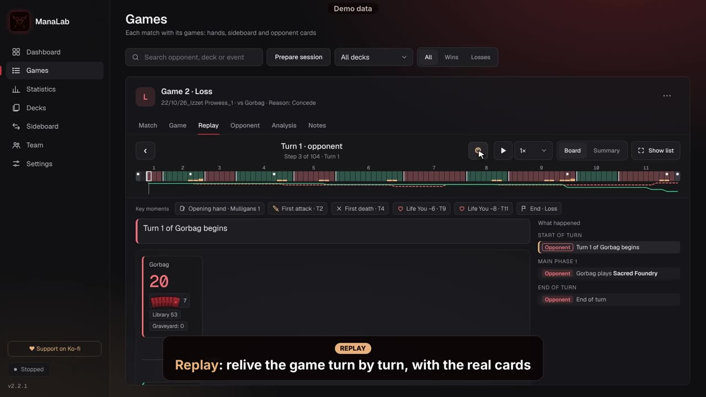
Video im Web: https://manalab.es/guia/guia_manalab_de.html#video-replay
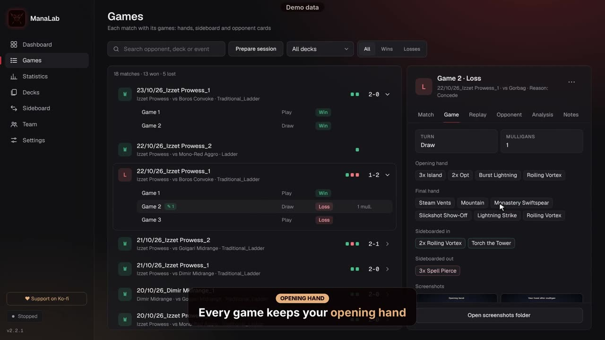
Video im Web: https://manalab.es/guia/guia_manalab_de.html#video-opening-hand-mulligans
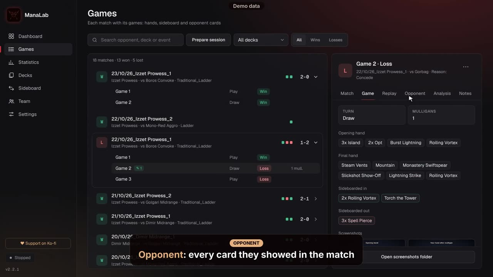
Video im Web: https://manalab.es/guia/guia_manalab_de.html#video-opponent
Highlights
Während des Spiels kannst du einen Screenshot von jedem Moment speichern. Das funktioniert auch, wenn die automatischen Screenshots aus sind.
- Drücke F8 (die Taste lässt sich unter Einstellungen › Highlights ändern).
- Oder drücke die Schaltfläche «Moment festhalten» oben links in Arena.
- Oder drücke «Moment festhalten» in der Seitenleiste von ManaLab.
Die Schaltflächen erscheinen nur während eines laufenden Spiels. Der Screenshot wird mit der Starthand und den Mulligans gespeichert.
Danach öffnest du ihn im Reiter Partie und schreibst eine Notiz zu diesem Moment.
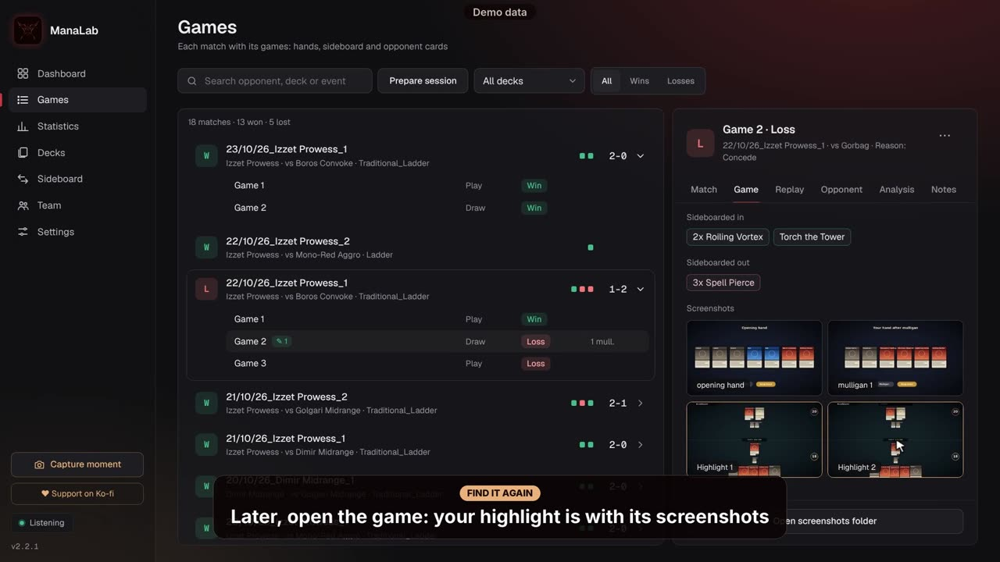
Video im Web: https://manalab.es/guia/guia_manalab_de.html#video-capture-moment
Notizen und Fehler
Im Reiter Notizen jeder Partie kannst du die Fehler markieren, die du gemacht hast (mit Markierungen), und schreiben, was du dir merken willst. Diese Fehler bilden die Grundlage des Berichts für deinen Coach und der Statistik wiederholter Fehler.
Decks
Hier stehen die Decks, die ManaLab erkannt hat. Von dort aus kannst du:
- Ein Deck umbenennen oder den Namen aus Arena verwenden.
- Den Archetyp korrigieren, wenn ManaLab ihn falsch eingeordnet hat, und Partien neu zuordnen.
- Prüfen, wie dein Deck in die Meta passt.
Statistiken: deine Gewinnraten
Deine Ergebnisse, geordnet nach:
- Deck.
- Gegner.
- Mulligans.
- Play / Draw.
- Letzten Tagen.
Die Matchup-Tabelle zeigt, mit welchen Decks du gewinnst und mit welchen du verlierst. Von hier aus kannst du deine Daten auch für deinen Coach exportieren.
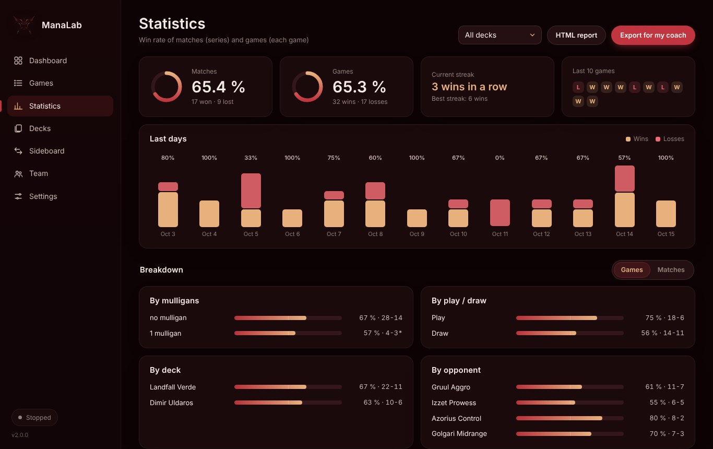
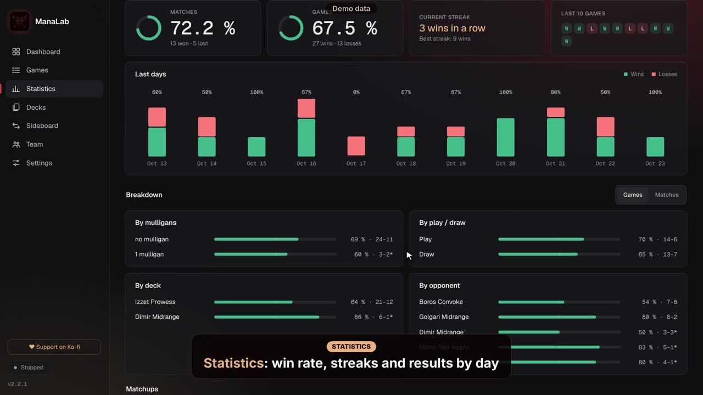
Video im Web: https://manalab.es/guia/guia_manalab_de.html#video-statistics
Sideboard: dein Plan pro Matchup
Für jedes Matchup kannst du notieren, was du hereinnimmst (Rein) und was du herausnimmst (Raus), und deinen Plan schreiben (Mein Plan). ManaLab zeigt auch, wie deine früheren Änderungen funktioniert haben.
Mit Abo schlägt dir «KI um einen Plan bitten» einen Sideboard-Plan vor, der auf deinen Partien in diesem Matchup beruht.
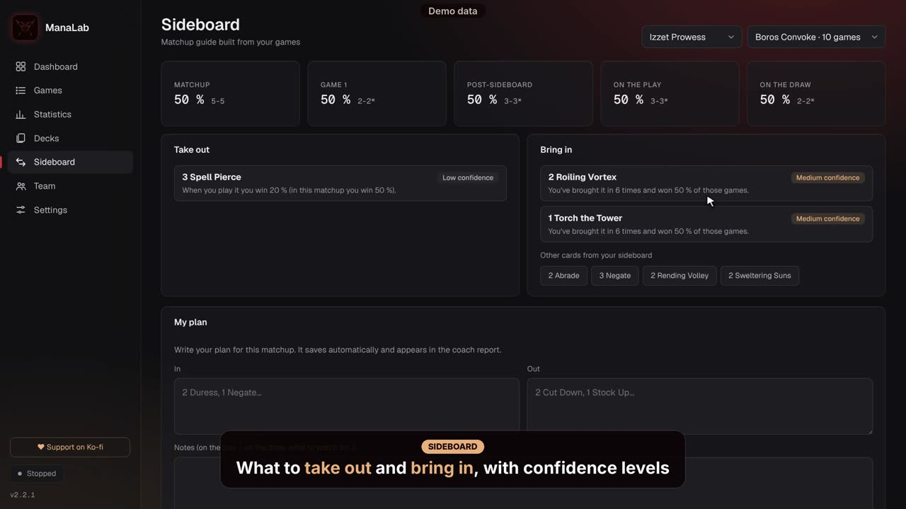
Video im Web: https://manalab.es/guia/guia_manalab_de.html#video-sideboard-guide
KI-Coach: Analyse verlorener Partien
Der KI-Coach erklärt, was bei einer Niederlage schiefging und was du beim nächsten Mal ausprobieren solltest. Nur für Abonnenten: 5 € pro Monat.
- Abonniere auf Ko-fi (Schaltfläche «Auf Ko-fi abonnieren» in den Einstellungen oder im Reiter Analyse). Du erhältst den Code per E-Mail.
- Gehe zu Einstellungen › KI-Analyse, füge den Code bei «Abo-Code» ein und speichere.
- Öffne eine Niederlage unter Partien und wechsle zum Reiter Analyse.
- Wenn du willst, schreibe eine konkrete Frage, zum Beispiel: «Hätte ich mulligan machen sollen?» oder «Habe ich in Zug 5 falsch angegriffen?».
- Drücke «Mit KI analysieren». Es dauert ein paar Sekunden. Die Antwort wird gespeichert, du zahlst also nie zweimal für dieselbe Partie.
Jeder Code hat ein Tageslimit (standardmäßig 30 Analysen pro Tag). Der Reiter zeigt, wie viele dir noch bleiben.
Nur die Daten der analysierten Partie werden gesendet: Deck, Hände, Sideboard, gesehene Gegnerkarten und der Partieverlauf. Dein Name, der Name deines Gegners und die vollständige Logdatei werden nicht gesendet.
Export für den Coach und Team
«Für den Coach exportieren» (unter Statistiken) erstellt eine Seite mit deiner Zusammenfassung, deinen Matchups, deinen markierten Fehlern und deinen Partien mit Notizen. Sie öffnet sich im Browser: von dort kannst du sie drucken oder als PDF speichern und an deinen Coach schicken.
Unter Partien lässt dich «Sitzung vorbereiten» die Partien auswählen, die du besprechen willst, und erstellt einen einzigen Bericht mit deinen Händen, Mulligans, Schlüsselmomenten, Zugübersicht, Notizen und Highlights. Du kannst die Namen deiner Gegner ausblenden. Er öffnet sich im Browser und funktioniert offline: drucke ihn oder speichere ihn als PDF.
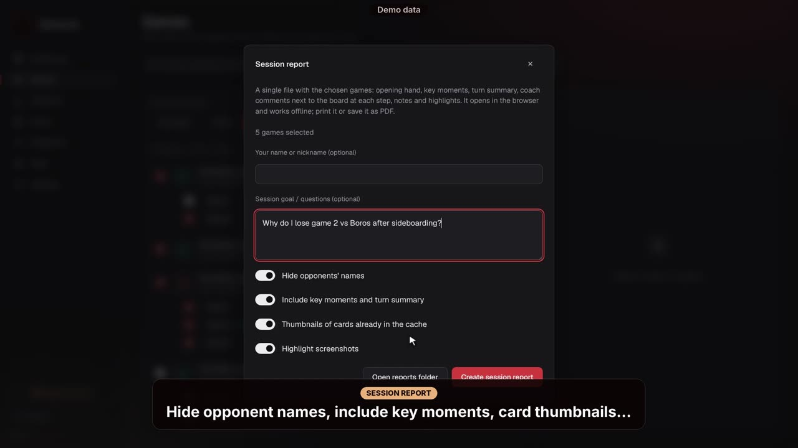
Video im Web: https://manalab.es/guia/guia_manalab_de.html#video-prepare-session
Unter Team kannst du Partien und Notizen mit deinem Team über einen gemeinsamen Ordner teilen (Google Drive, Dropbox oder OneDrive). Jeder schreibt nur in seinen eigenen Unterordner. Auch die Screenshots werden mit ihren Notizen geteilt (abschaltbar unter Einstellungen › Team), und du kannst die Namen deiner Gegner ausblenden.
Im Bildschirm Team siehst du jedes Spiel eines Mitspielers mit denselben Details wie deine: Hände, Screenshots mit Notizen, Wiederholung, Deck des Gegners und Notizen. Als Coach schreibst du deine Notiz im Reiter Notizen.
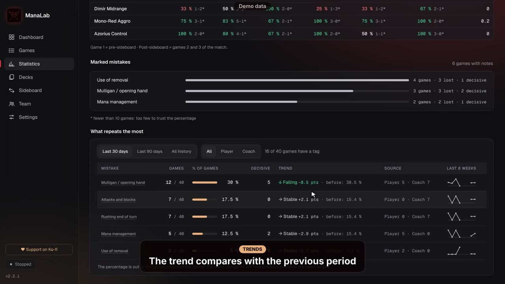
Video im Web: https://manalab.es/guia/guia_manalab_de.html#video-coach-tags-trends-team
Einstellungen
- Sprache: ManaLab ist in 9 Sprachen verfügbar.
- Overlay im Spiel: zeigt Informationen während du spielst.
- Screenshots und Scryfall-Suche, wenn eine Karte fehlt.
- Pfad zur Player.log, falls sie nicht automatisch gefunden wird.
- KI-Analyse: hier fügst du deinen Abo-Code ein.
- Auf Ko-fi unterstützen und die Startanleitung erneut öffnen.
- Hinweis auf neue Versionen: ManaLab sagt dir, wenn eine neue Version erscheint, und zeigt die Neuerungen.
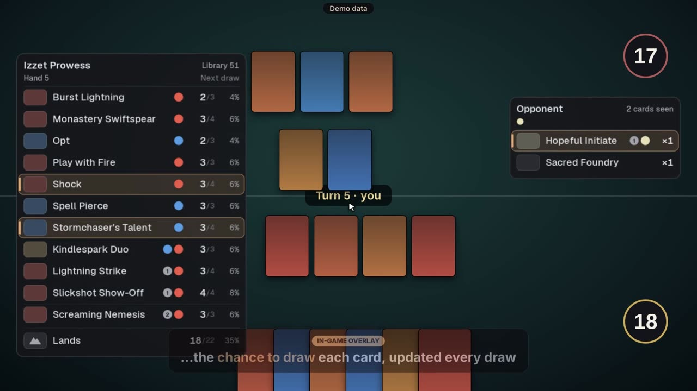
Video im Web: https://manalab.es/guia/guia_manalab_de.html#video-in-game-overlay
ManaLab aktualisieren
Ab Version 2.1.3 aktualisiert sich ManaLab selbst. Beim Start und einmal am Tag prüft es, ob es eine neue Version gibt; wenn ja, erscheint unten links ein Hinweis.
- Drücke im Hinweis «Neuerungen ansehen», wenn du lesen willst, was sie bringt.
- Drücke «Jetzt aktualisieren». ManaLab lädt die neue Version herunter, schließt sich und öffnet sich bereits aktualisiert wieder. Die Windows-Warnung erscheint nicht.
Deine Spiele, Screenshots, Einstellungen und der Abo-Code sind separat in %LOCALAPPDATA%\ManaLab gespeichert und gehen beim Update nicht verloren.
Wenn du die 2.1.0, 2.1.1 oder 2.1.2 hast (sie konnten starten und sich ohne Fenster wieder schließen), aktualisiere ein letztes Mal von Hand: lade die ZIP von manalab.es herunter, Rechtsklick › Eigenschaften › «Zulassen» ankreuzen › OK, ManaLab schließen und die ZIP über seinen Ordner entpacken.
Du kannst jederzeit unter Einstellungen › Info › «Nach Updates suchen» prüfen und den Hinweis mit «Bei einer neuen Version Bescheid geben» abschalten.
Mit Version 2.0.1 oder älter siehst du den Hinweis nicht: lade die neueste Version von manalab.es herunter.
Datenschutz
Deine Daten bleiben auf deinem PC. ManaLab liest nicht den Speicher von Arena und verbindet sich nicht mit dessen Servern.
Das Einzige, was deinen Computer verlässt, ist die KI-Analyse, und nur wenn du sie anforderst.